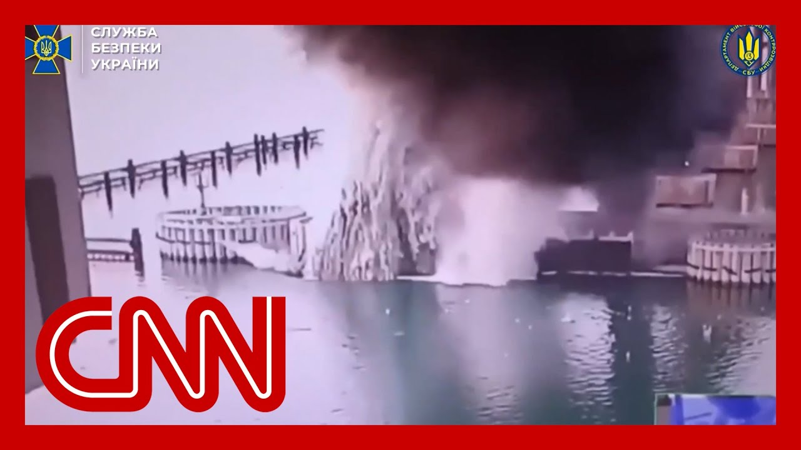

【乌克兰袭击俄罗斯克里米亚大桥】
Summary: Ukraine has launched a significant underwater attack on the Kerch Bridge, a crucial link between mainland Russia and Crimea. This marks the third such attack since the war began, but is being described by Ukrainian intelligence as the first using underwater explosives—estimated at 1,100 pounds of TNT. The explosion targeted the bridge’s concrete pillars and created visible smoke and water plumes, though exact damage remains unclear.
摘要： 乌克兰对连接俄罗斯本土与克里米亚的刻赤大桥发动了一次重大的水下袭击，这是战争爆发以来的第三次，但乌克兰情报部门表示这是首次使用水下炸药（约1100磅TNT当量）的行动。爆炸瞄准的是桥梁的混凝土桥墩，现场可见巨大烟雾和水柱，实际破坏程度仍不清楚。

⏱️ Estimated Reading Time: 17 min
Breaking news.
突发新闻。
Ukraine says it has hit the Crimea Bridge in an underwater attack.
乌克兰称通过水下袭击击中了克里米亚大桥。
I want to show you this video, which was posted by Ukraine's intelligence agency, showing the moment the bombs went off.
我想向您展示这段由乌克兰情报机构发布的视频，记录了炸弹爆炸的瞬间。
While this is the third time Ukraine has hit the 12 mile bridge that's connecting occupied Crimea to mainland Russia since the war began.
这是自战争开始以来，乌克兰第三次袭击这座连接被占领的克里米亚与俄罗斯本土的12英里长桥梁。
Ukraine is describing it as a new type of operation.
乌克兰将其描述为一种新型作战行动。
We've got CNN's international diplomatic editor, Nic Robertson, in London for us.
我们请到了CNN国际外交编辑尼克·罗伯逊，他在伦敦为我们报道。
And, Nick, we're watching this video.
尼克，我们正在观看这段视频。
You can see those underwater bombs going off.
您可以看到那些水下炸弹爆炸。
I especially want to talk about the damage we're seeing on the Crimea Bridge.
我特别想谈谈我们在克里米亚大桥上看到的损坏情况。
It's clearly very strategic for Russia.
这对俄罗斯显然具有重要战略意义。
Tell me what we know.
请告诉我们目前掌握的情况。
Yeah.
好的。
As the Ukrainians say, it's a third time they've tried to target the bridge, and this time they've gone for one of the sort of vertical concrete pillars that holds the bridge above the water, 35m above the water, nine meters of water.
正如乌克兰方面所说，这是他们第三次试图袭击该桥，而这次他们瞄准了支撑桥梁高出水面35米的垂直混凝土桥墩之一，水下深度为9米。
It's not clear how deep.
具体深度尚不明确。
If it was at the base.
如果爆炸发生在桥墩基部。
There's a lot of silt at the base of the Kerch Strait there.
刻赤海峡底部有大量淤泥。
The.
那里。
That's underneath the Crimea Bridge.
位于克里米亚大桥下方。
So this explosion, the Ukrainians are saying involved 1,100 pounds of TNT equivalent.
乌克兰称此次爆炸相当于1100磅TNT炸药。
That is a pretty massive explosion.
这是一次相当大规模的爆炸。
And we've just been able to see some video shot from a distance from the bridge.
我们刚刚看到了一些从远处拍摄的桥梁视频。
And you really can see a huge plume of smoke, water rising up next to the bridge.
确实可以看到桥旁升起巨大的烟雾和水柱。
But it's not quite clear what has actually been damaged.
但实际受损情况尚不十分清楚。
The lasting damage, the impact of all of this.
持久性损坏及其影响。
It's important for Ukraine to target because it connects mainland Russia with annexed Crimea.
这座桥对乌克兰来说是一个重要目标，因为它连接俄罗斯本土与被吞并的克里米亚。
And now, since Russia began that invasion in 2022, they've taken essentially a land corridor, a land bridge that links mainland Russia to Crimea.
自俄罗斯2022年发动入侵以来，他们实际上已经建立了一条连接俄罗斯本土与克里米亚的陆路走廊。
But when they annexed it in 2014, they had nothing linking it but a ferry.
但在2014年吞并克里米亚时，两地之间仅靠渡轮连接。
So high speed effort.
因此他们快速行动。
Four years later, they build this 12 mile long estimated $3 billion rail and road bridge to link mainland Russia with Crimea, and Russia uses it to resupply and stock munitions closer to the front line in Crimea and Crimea is also an important naval base for the Russian military as well.
四年后，他们建造了这座长约12英里、耗资约30亿美元的铁路公路两用桥，连接俄罗斯本土与克里米亚。俄罗斯利用该桥向前线运送补给和储备弹药，而克里米亚也是俄罗斯海军的重要基地。
So strategically, hugely important.
因此，这座桥在战略上极为重要。
And as we've seen, Ukraine is really going after high value targets, these strategic bombers over the weekend, hitting a significant number of those.
正如我们所看到的，乌克兰确实在打击高价值目标，上周末袭击了多架战略轰炸机。
And now targeting this bridge again and indicating the SBU indicating that this is not one and done, that there may be others to follow.
现在再次袭击这座桥，乌克兰安全局表示这并非一次性行动，可能还会有后续袭击。
The first explosion of this type.
这是此类爆炸的首次。
And I think, you know, just as we're sort of looking at how Ukraine is trying to blow up this bridge, the two previous attempts were different.
我认为，正如我们看到的乌克兰试图炸毁这座桥的方式，前两次尝试有所不同。
One 2022 and the explosion seemed to be much more at road level and explosive placed just under the road level, disabled, the road for a period of time.
一次是在2022年，爆炸似乎更多发生在路面，炸药被安置在路面下方，导致道路暂时瘫痪。
And then the other the other one again, innovative in 2023.
另一次是在2023年，同样具有创新性。
these, baby sea drones, as they were called at the time, water borne drones, innovative effort by the Ukrainian to hit the bridge at water level.
当时被称为"婴儿海无人机"的水上无人机，是乌克兰为在水面高度袭击桥梁所做的创新尝试。
And that's why the Ukrainians this time are saying this is an underwater attack.
这就是为什么乌克兰此次称这是一次水下袭击。
This is what makes it different.
这正是其不同之处。
And of course, with so many stanchions under that bridge, the Russians have got quite a job on their hands now to see if Russia, if Ukraine is actually, putting out, accurate information that there may be more explosives underneath some of the other pillars.
当然，由于桥下有如此多的桥墩，俄罗斯现在面临艰巨任务，需要核实乌克兰发布的信息是否准确，即其他桥墩下可能还有更多炸药。
I also want to talk about Ukraine striking Zaporizhzhia and her son and leaving people without electricity.
我还想谈谈乌克兰袭击扎波罗热和赫尔松导致当地断电的情况。
This is within Ukrainian, Ukraine, but it's Russian held territory.
这些地区属于乌克兰领土，但被俄罗斯控制。
Keeping in mind that we saw a sophisticated attack deep within Russia yesterday, the assault seems to be, quite aggressive right now from the Ukrainian side.
值得注意的是，昨天乌克兰对俄罗斯境内纵深发动了复杂袭击，目前乌方的攻势似乎相当猛烈。
Tell me what we're seeing in Russian territory right now and the significance of this, Nick?
请告诉我们目前在俄罗斯领土上看到的情况及其意义，尼克？
Yeah, the significance appears to be, you know, when you're cutting off electricity, it's demoralizing to, the, the Russian forces that, you know, one of the reasons that Ukraine has sort of held back from doing this sort of attack on its own territory, albeit effectively annexed and controlled by Russian forces, in part, is aparecer, in part in her song is because they're Ukrainians living there, too.
是的，其意义似乎在于，切断电力供应会打击俄军士气。乌克兰此前对本国领土（尽管实际上被俄罗斯吞并和控制）进行此类袭击有所保留，部分原因是那里也居住着乌克兰人。
But this does seem to be the Ukrainians trying to take the fight to the Russians in a way that, undermines Russia's war fighting abilities.
但这似乎是乌克兰试图以削弱俄罗斯作战能力的方式将战火引向俄方。
Ukraine is taking some losses at the front.
乌克兰在前线遭受了一些损失。
We've seen Sumy in the north, the town, they're being heavily hit and targeted again in the city center, according to Ukrainian city officials in Sumy.
根据苏梅市乌克兰官员的说法，北部城市苏梅市中心再次遭到猛烈袭击。
right into the city center.
直接袭击市中心。
Missiles landing in the city center.
导弹落在市中心。
So there's pressure coming on Ukrainian forces by, if you will, Russia's, if you want to call it standard military tactics of hammer and grind away at the front hits it is just behind the front line.
因此，乌克兰军队面临压力，可以说是俄罗斯采用的标准军事战术——在前线持续施压，同时打击前线后方。
Whereas Ukraine is trying to sort of hit in a precision way, potentially, because that the they view is the best use of the weapons and munitions that they have at their disposal.
而乌克兰则试图以精确方式打击目标，可能是他们认为这是最佳利用现有武器弹药的方式。
And that does seem to include hitting the electricity or taking down the electricity supplies, in Zaporizhzhia and in and in her.
这似乎包括袭击扎波罗热和赫尔松的电力供应。
All right.
好的。
Nic Robertson, thank you so much for that update.
尼克·罗伯逊，非常感谢您的更新。
I want to bring in military analyst Cedric Layton, who's joining us live from Washington DC.
我想请军事分析师塞德里克·莱顿加入我们，他在华盛顿特区与我们连线。
Cedric, always good to have you on, especially when we're just seeing so much news coming through.
塞德里克，很高兴您能来，特别是在我们看到如此多新闻的时候。
I want to talk about there's so much that's happened.
我想谈谈发生的这么多事情。
Ukraine, striking the Crimea Bridge with these underwater explosives.
乌克兰使用水下炸药袭击克里米亚大桥。
This is after striking Zaporizhzhia.
这是在袭击扎波罗热之后。
Kherson?
赫尔松？
We saw what happened deep within Russia.
我们看到了俄罗斯境内纵深发生的事情。
How are you reading into these attacks?
您如何解读这些袭击？
And is it making a big difference in terms of the calculus and the strength of Ukraine right now?
这对乌克兰当前的实力和战略是否产生重大影响？
That has clearly been on the backfoot for quite some time?
显然乌克兰已处于劣势相当一段时间？
Lenny, great to be with you again.
莱尼，很高兴再次与您交谈。
The the big thing for the the Ukrainians are trying to do is basically would make pointed out if that is you strategically important targets.
乌克兰人试图做的重要事情基本上是瞄准战略重要目标。
And so when you see what they're doing you go through every single aspect.
因此，当您看到他们的行动时，您会审视每一个方面。
There's a lot of planning that's involved in what the Ukrainians have been doing.
乌克兰的行动涉及大量规划。
And that planning seems to indicate that they're looking at the most, effects that they can achieve.
这一规划似乎表明他们正在寻求能够实现的最大效果。
So when you look at what's happening with the bridge, the Kerch Bridge, which is a strategically important, vital link between Russia proper and Crimea, they are basically saying the Ukrainians are saying that this is the place where they are going to, in essence, take a stand.
因此，当您观察刻赤大桥的情况时——这座桥是俄罗斯本土与克里米亚之间的重要战略纽带——乌克兰人基本上表示，他们将在这一地点表明立场。
They don't have the manpower to reoccupy Crimea, but they will make it as miserable as possible for the Russians who are occupying Crimea.
他们没有足够人力重新占领克里米亚，但会让占领克里米亚的俄罗斯人尽可能难受。
And that is one of the ways to do that is to cut off the supplies, make the bridge basically unusable.
实现这一目标的方法之一是切断补给，使桥梁基本无法使用。
It's both a rail and a road bridge.
这是一座铁路公路两用桥。
And that bridge is basically the one that is such a prestige project for the Russian Federation.
这座桥基本上是俄罗斯联邦的 prestige 项目。
Putin himself was there at the opening of the bridge, and he was there at the reopening of the bridge.
普京本人出席了桥梁的开幕和重新开放仪式。
So that's the kind of thing that they understand.
因此，他们明白这类事情的重要性。
The Ukrainians understand that the Russians have these prestige projects, and they are very much interested in damaging those prestige projects.
乌克兰人明白俄罗斯有这些 prestige 项目，他们非常有意破坏这些项目。
And the Kerch Bridge is basically at the top of that list.
而刻赤大桥基本上名列榜首。
And then if you move on to what has happened with the bomber fleet, in the other airplane in the involved with everything that was happening on Sunday, you see that there are so many different targets that that the Ukrainians were able to, in essence, prosecute and using that kind of as a military term, which basically means that they went after these targets.
然后，如果您转向周日发生的轰炸机队事件，您会看到乌克兰人能够针对如此多不同目标采取行动——用军事术语来说就是"prosecute"，基本上意味着他们追击了这些目标。
so when they went after these targets, they were sending a message that it's a risky operation, both operationally and politically as well as obviously diplomatically.
因此，当他们追击这些目标时，他们传递了一个信息：这是一次高风险行动，无论是在作战、政治还是外交层面。
but the operation that they engaged in is one in which they sent a clear message that everything that the Russians have their most valuable assets, that all of that is potentially at risk, from Ukrainian unconventional attacks.
但他们参与的这次行动传递了一个明确信息：俄罗斯拥有的最有价值资产都可能面临乌克兰非常规袭击的风险。
And that is, something that could potentially be a game changer for the Ukrainians.
这可能是乌克兰人的 game changer。
And that's rightly so.
这是理所当然的。
I mean, you know, it's also showing vulnerabilities on the Russian side where the Ukrainians were able to go so deep within Russia on this covert attack, which clearly was successful.
我的意思是，这也显示了俄罗斯方面的脆弱性，乌克兰能够在俄罗斯境内纵深发动这次明显成功的秘密袭击。
We also heard Zelensky explaining the logic behind this.
我们还听到泽连斯基解释了这背后的逻辑。
Cedric, I want you to listen to what he said when demonstrate this.
塞德里克，我想请您听听他对此的阐述。
We don't want to demonstrate our strength.
我们不想展示我们的力量。
We are demonstrating it because the enemy doesn't want to stop.
我们展示它是因为敌人不愿停止。
We demonstrate it in a fair way on military targets, and we don't only demonstrate it to the Russian aggressors, but also to all of those allies that once were strong allies and have now started doubting us.
我们以公平的方式在军事目标上展示它，我们不仅向俄罗斯侵略者展示，也向那些曾经是坚定盟友、现在开始怀疑我们的人展示。
The trust towards Ukrainians and faith in Ukraine has returned.
对乌克兰人的信任和对乌克兰的信心已经回归。
So that's the theory.
这就是理论。
That's Zelensky's thinking.
这是泽连斯基的想法。
But does it give Ukraine an advantage?
但这能给乌克兰带来优势吗？
Because there's a difference between what we're seeing on the front lines and then these precision attacks.
因为我们在前线看到的情况与这些精确袭击之间存在差异。
Yeah, there definitely is a difference.
是的，确实存在差异。
So when people see attacks like this, this is basically in addition to being a military war, a military campaign, it is also a PR campaign.
因此，当人们看到这样的袭击时，这基本上不仅是一场军事战争、军事行动，也是一场公关活动。
And it's very essential for the Ukrainians to basically bring their allies back, convince people in the United States that Ukraine is is worth fighting for.
对乌克兰人来说，基本上重新赢得盟友支持、让美国人相信乌克兰值得为之战斗非常重要。
The same in Western Europe, making sure that each of these, allies of Ukraine, as Zelenskyy has called them, that they truly stand with Ukraine.
西欧也是如此，确保泽连斯基所称的这些乌克兰盟友真正站在乌克兰一边。
And it is these kinds of attacks, these basically sensational attacks that really show that the Ukrainians have capabilities that, belie what is happening on the front lines.
正是这类轰动性袭击真正展示了乌克兰的能力，这与前线发生的情况形成反差。
the front lines, they're not collapsing.
前线并未崩溃。
But there are definitely pressures And it's very difficult for the Ukrainians just by sheer numbers of personnel.
但肯定存在压力，仅凭人员数量，乌克兰人处境非常艰难。
The difference, you know, between the Russian forces and the Ukrainian forces in terms of numbers and in terms of equipment and just in terms of volume, what the Ukrainians are doing is they're relying on precision, as you mentioned, and that precision, you know, does several things.
俄罗斯军队与乌克兰军队在人数、装备和规模上的差异，正如您提到的，乌克兰人依赖精确打击，而这种精确打击有多重作用。
First of all, it shows that the Ukrainians are using intelligence very precisely.
首先，它表明乌克兰人非常精确地使用情报。
They are not, using the old, Russian or Soviet method of going after a target with mass, with lots of military forces, with lots of weapons, with lots of artillery.
他们没有使用俄罗斯或苏联那种以大量军事力量、武器和火炮追击目标的旧方法。
they're basically modernizing what the approach is on the Ukrainian side.
他们基本上在现代化乌克兰方面的作战方式。
And that means less indiscriminate killing, when it comes to civilian targets, basically, the Ukrainians try very hard not to hit civilian targets.
这意味着更少无差别杀戮，在平民目标方面，乌克兰人非常努力避免击中平民目标。
The Russians don't care.
俄罗斯人不在乎。
And that's the big difference between them.
这是他们之间的巨大差异。
And that helps the Ukrainians from a PR standpoint, especially in the West.
这从公关角度帮助了乌克兰人，特别是在西方。